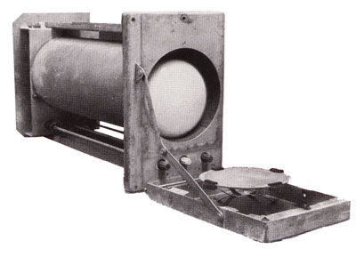

Pré-história da Memória
Antes da RAM como a conhecemos hoje, os primeiros computadores utilizavam formas primitivas de armazenamento temporário. Uma dessas formas era o uso de tubos de vácuo para armazenar dados. Outro exemplo era a memória de núcleo magnético, que usava pequenos anéis de material magnético que podiam ser magnetizados em duas direções (0 e 1).
O Nascimento da RAM

O termo RAM surgiu para descrever memórias de acesso aleatório (em oposição a memórias sequenciais, como fitas magnéticas). A IBM introduziu a Dynamic RAM (1966) com o sistema System/360 Model 95, usando capacitores que precisavam ser constantemente atualizados (refresh) para manter os dados. A Intel criou a primeira Static RAM (1969), mais rápida que a DRAM, mas mais cara e complexa (usada em caches posteriormente).
Surge a RAM de semicondutor

Com os avanços tecnológicos nos circuitos integrados durante a década de 1970, a memória RAM baseada em transistores começou a ganhar espaço e substituir gradativamente a antiga memória de núcleo magnético, que era mais lenta e menos eficiente. Um marco importante foi em 1970, quando a Intel lançou o primeiro chip de DRAM (Dynamic Random-Access Memory) comercial, o modelo 1103. Este chip possuía uma capacidade de 1 Kb (1024 bits) e representou uma revolução na forma como os computadores armazenavam dados temporários, oferecendo maior velocidade e menor custo de produção. Esse desenvolvimento foi fundamental para o avanço dos computadores pessoais e sistemas embarcados nas décadas seguintes
A Era Moderna

Em 1996 surge a SDRAM (Synchronous DRAM), sincronizada com o clock do processador, aumentando a eficiência. Lançada em 2000, a DDR SDRAM (Double Data Rate) duplicou a taxa de transferência. Depois vieram: DDR2 (2003), DDR3 (2007), DDR4 (2014), DDR5 (2020). .
Hoje e o Futuro

A RAM continua essencial na era da IA, jogos e big data, enquanto novas tecnologias, como Intel Optane (3D XPoint), LPDDR e HBM, ampliam desempenho e eficiência. Inovações como MRAM, ReRAM e 3D XPoint prometem unir a velocidade da RAM com a persistência dos SSDs, transformando o futuro da memória.